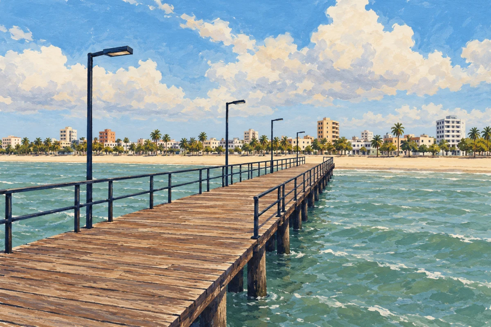
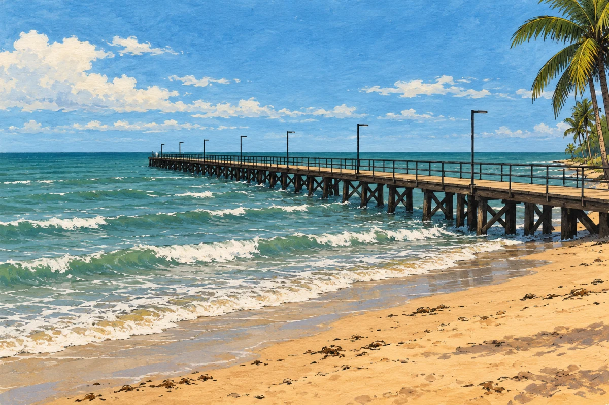
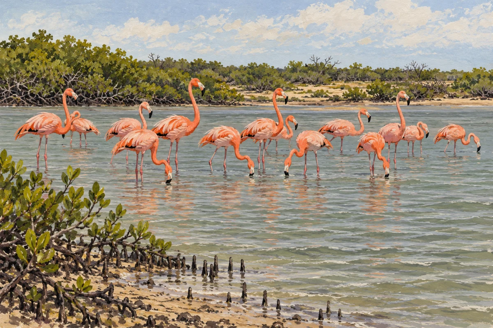
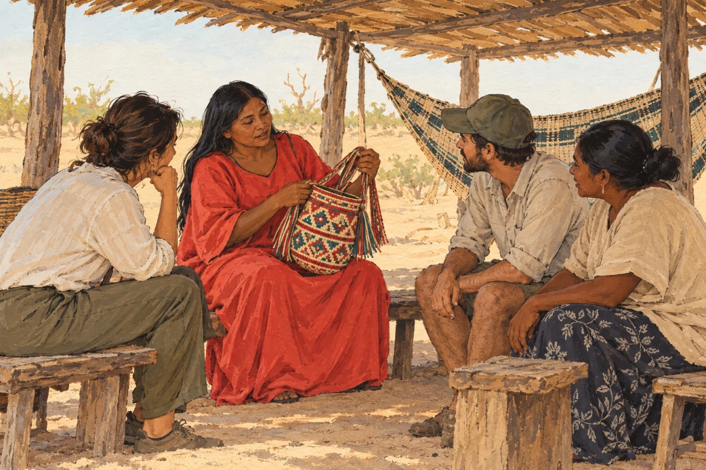
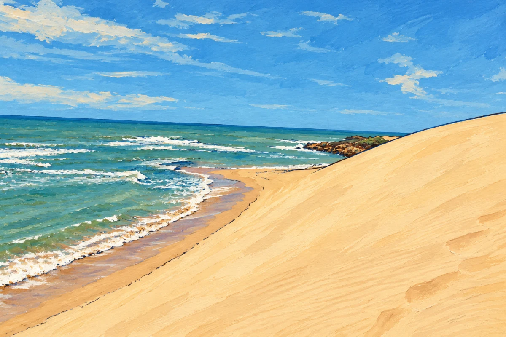
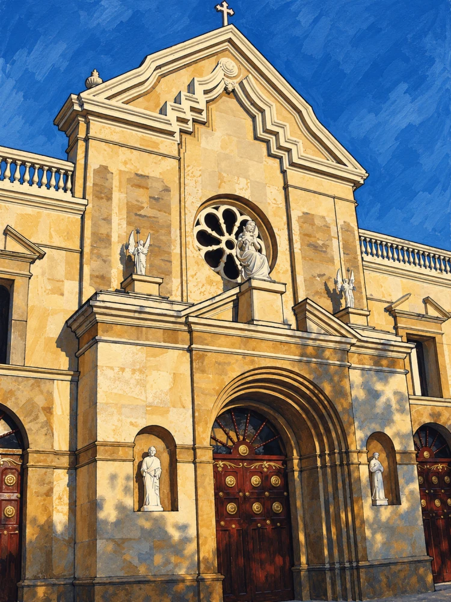

Borradores pendientes de aprobación. Composiciones aproximadas indicadas en manifiesto. No publicados.

Ilustración original IA; fuentes y límites en procedencia.

Ilustración original IA; fuentes y límites en procedencia.

Ilustración original IA; fuentes y límites en procedencia.

Ilustración original IA; fuentes y límites en procedencia.

Ilustración adaptada mediante IA de «Taroa Dunes in Alta Guajira 2023», Oscar Costero, CC BY-SA 4.0. Cambios: transformación a tinta/gouache y retiro de figura humana distante.

Adaptación IA de Martinduquea, CC BY-SA 3.0. Encuadre retrato: no muestra la plaza ni está aprobado para recorte de tarjeta.
Pendientes sin imagen: Plaza Almirante Padilla y Valle de los Cangrejos.